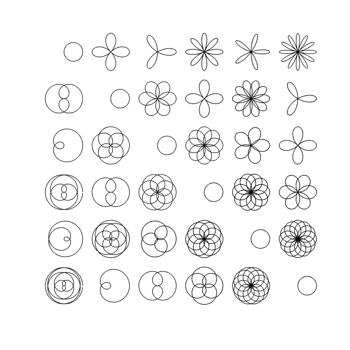
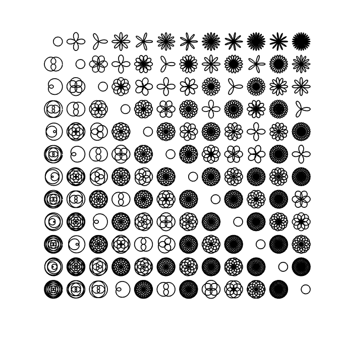

A rose curve is a sinusoid in polar coordinates, that is, $$ r = \sin(k\theta). $$ Rational values of $k$ produce closed curves, while irrational values produce curves of infinite length that fill the unit disc. If $k = 1$, then the result is a circle. These figures can be likened to Lissajous curves as in the Example geom/Lissajous [1].
The Wikipedia page about rose curves [2] contains a nice image of many roses for different rational values of $k$. This Example reproduces that image.
In order to plot the roses, we will paramatrize them in the complex plane using Cartesian coordinates: $$ x(t) = \cos(k t) \sin(t), $$ $$ y(t) = i \cos(k t) \cos(t). $$ Here is a function that creates a chebfun of a rose based on the parameter $k = m/n$ for two integers $m$ and $n$. The domain must be at least as long as $2\pi$ times the least common multiple of $m$ and $n$.
roseCurve = @(m,n) chebfun(@(t) cos(m/n*t).*cos(t)+1i*cos(m/n*t).*sin(t), ...
[0, 2*pi*lcm(m,n)], 'trig');
The above command employs the new 'trig' flag for Fourier-based chebfuns, which for smooth periodic functions reduces the average number of terms necessary to represent the function by a factor of about $\pi/2$:
m = 50; n = 51; f = roseCurve(m, n); g = chebfun(@(x) f(x), [0, 2*pi*lcm(m,n)]); length(g) ./ length(f)
ans = 1.593703593703594
pi/2
ans = 1.570796326794897
Here is the image reproduced.
LW = 'linewidth';
figure('position', [0 0 680 680]), hold on
N = 6;
for m = 1:N
for n = 1:N
f = roseCurve(m,n);
offset = 2.5*m - 2.5i*n;
plot(f + offset, 'k-', LW, 1)
end
end
axis equal tight off

And here is a more ambitious image of the same kind, where the patterns along diagonals become clear.
tic
clf, hold on
N = 12;
for m = 1:N
for n = 1:N
f = roseCurve(m,n);
offset = 2.5*m - 2.5i*n;
plot(f + offset, 'k-', LW, .8)
end
end
axis equal tight off
time = toc;

The above image did not take long to produce:
time
time = 8.936245373000000
References
-
Chebfun Example geom/Lissajous